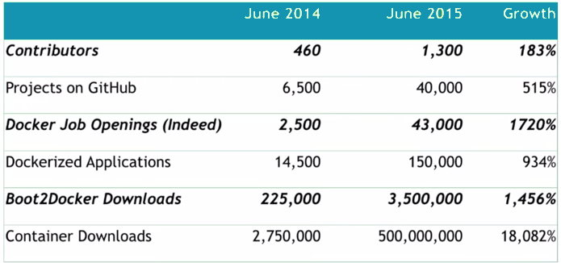
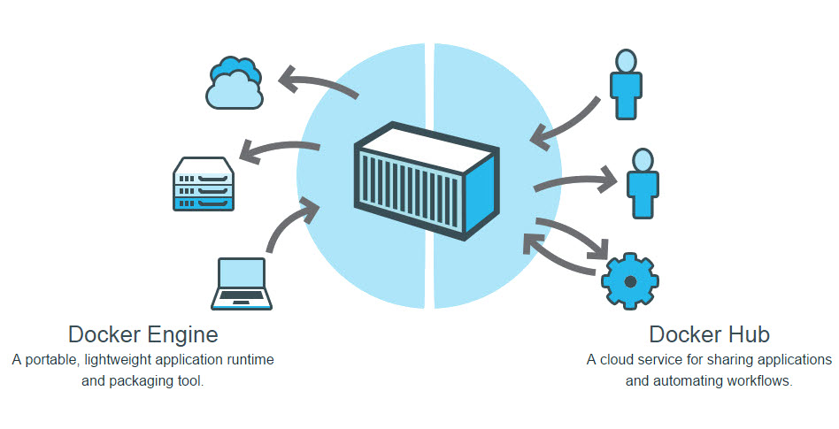
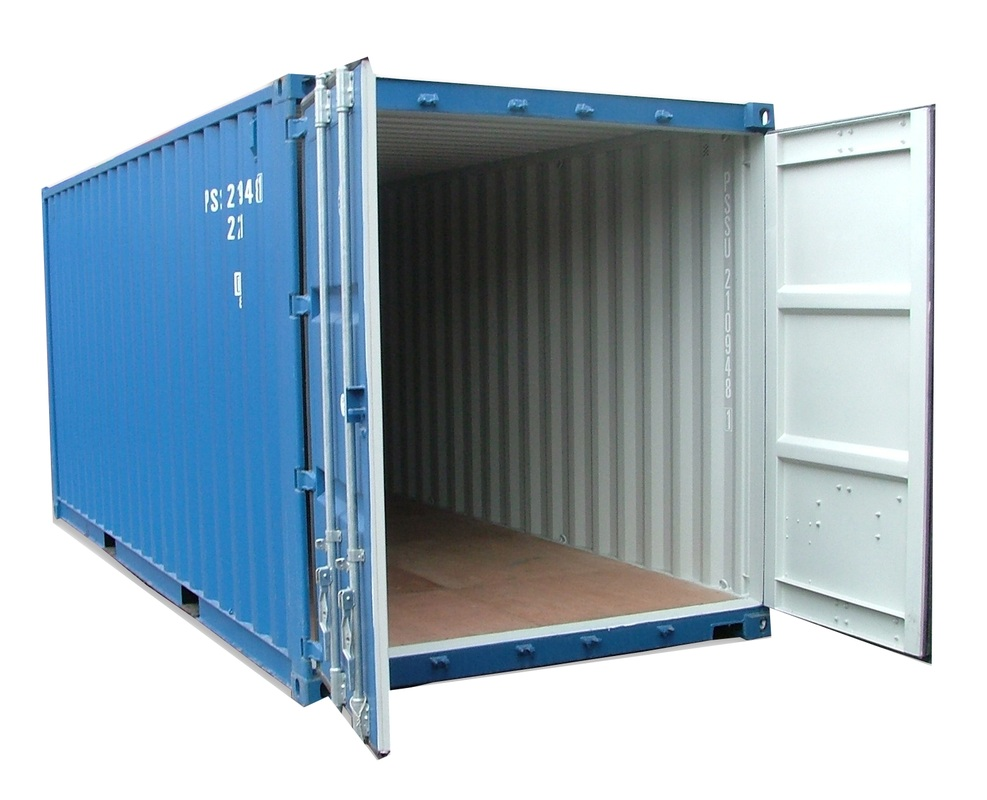
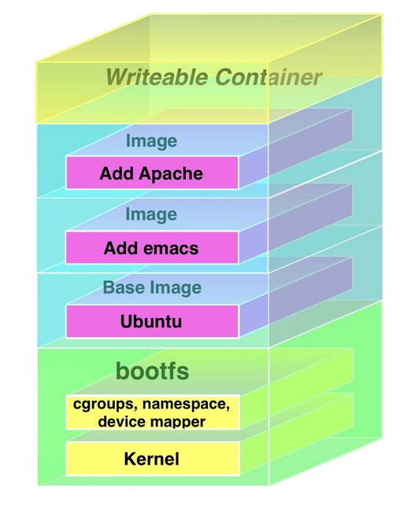
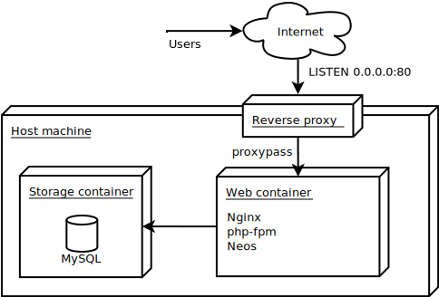

Docker 101
From Development to Production and back
by Dmitri Pisarev / @dimaip
- Work and study in SFI.ru — first independant Christian Theological University in Russia
- Worked with TYPO3 since 2006
- One year ago first installed Neos... And loved it!
- Neos contributor since then
What's Docker?
The Next Big Thing?
You bet! Just look at the growth stats: Extremly lightweight VM?
Almost. At least it feels like one
Virtual Machines

Containers

Way less fat here!
Way less fat here!
FreeBSD jails on steroids?
Yes, but we had that years ago...
| | |
|-|-
|`namespaces` | isolation
|`cgroups` | resource control
|`libcontainer` | Docker container format
|`UnionFS` | fast copy-on-write filesystem
Official answer
Docker is an open platform for developing, shipping, and running (distributed) applications
What problems does it solve?
- Setup development environments in minutes
- Have identical environment in production and development
- Freedom to try new things without worrying about infrastructure
Key terms
- Container
- Image
- Image registry
Container
Container is an isolated and secure application platform, that holds everything that is needed for an application to run
Image
A Docker image is a read-only template used to create Docker containers
Image registry
Docker registries hold images.
The public Docker registry is called Docker Hub.
Architecture overview

Join the session now!
Stuff to expect:
- Install the thing
- Learn the basic usage
- Going to production
- And much more!
...where we left off
Agenda:
- Installation
- Managing data in containers
- Orchestration with Docker Compose
- Going to production
Getting started
Installation on Linux
It just works.wget -qO- https://get.docker.com/ | shInstallation on Mac/Windows
“All hope abandon ye who enter here”
~Dante Alighieri, 1321AD

- You need boot2docker VM
- Use OSX or Windows installer
- Try without host volumes first
- Be ready for trouble!
http://files.t3dd15.typo3.org/
Create and start a container
docker run -i -t busybox shManaging data in containers
Layered filesystem
The versioned filesystem in Docker is based on layers. They're like git commits or changesets for filesystems. Data volumes
Filesystem mounts outside of UFS. Can even be mounted from host OS./var/lib/docker/volumes/fe04a94dfaad3d9efa99c81bd79a42b383b55171...Data-only containers
You should use volumes mounted from data-only containers for portabilityDocker Compose
Data-only containers in practice
dbdata:
image: busybox:latest
command: echo dbdata
volumes:
- /var/lib/mysql
webdata:
image: busybox:latest
command: echo webdata
volumes:
- data:/data
Good old mySQL database
db:
image: million12/mariadb:latest
ports:
- 3306
volumes_from:
- dbdata
environment:
MARIADB_PASS: pass
restart: always
Web container with Neos demo site
web:
image: million12/typo3-neos
ports:
- '80'
links:
- db:db
volumes_from:
- webdata
environment:
VIRTUAL_HOST: 'neosm.dev,dev.neosm.dev'
T3APP_NAME: 'neosm.dev'
T3APP_NEOS_SITE_PACKAGE: 'TYPO3.NeosDemoTypo3Org'
restart: always
SSH container
ssh:
image: million12/php-app-ssh
ports:
- '22'
links:
- db:db
- web:web
volumes_from:
- webdata
- dbdata
environment:
IMPORT_GITHUB_PUB_KEYS: dimaip
restart: always
Redis in a few lines of code
redis:
image: redis
To Production!
Nginx reverse proxy
docker-gen
https://github.com/jwilder/docker-genGenerate any sorts of configs based on data from running docker containers
- Reverse-proxy configs
- SSH config file
- Whatever you like!
Deploying containers
- Merge change to master branch on Github
- Image is automatically rebuilt on Docker Hub
- Pull new image, run it in parallel with the old one, test
- Redirect traffic to new container, stop the old one
- Rollback if things go wrong
Great for big infrastructure changes,
but slow for code-only deploys
Hybrid deploy
For small code changes:
- Merge change to master branch on Github
- CI tool of choice tests the build
- Surf deploys code changes via SSH container
And for big ones do full container re-deploy